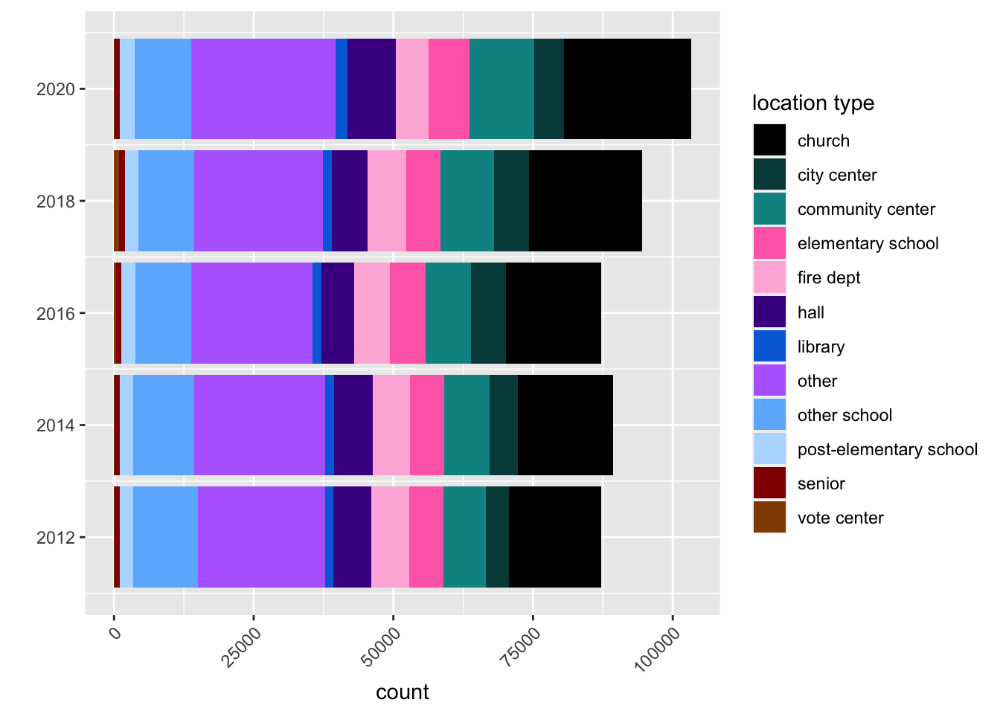
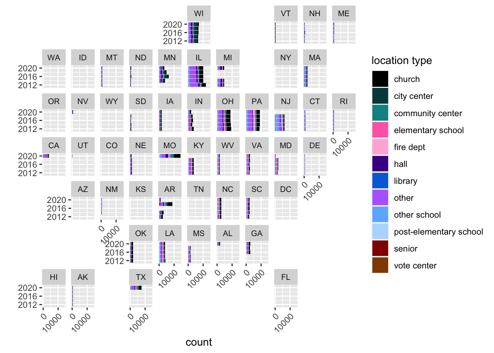

library(tidyverse) # ggplot, lubridate, dplyr, stringr, readr...
library(tidytext)
library(praise)
library(paletteer)Polling Places
The Data
The dataset comes from The Center for Public Integrity. Each row represents a US polling place (location to vote in an election) across many elections from 2012 to 2020.
polling <- readr::read_csv('https://raw.githubusercontent.com/rfordatascience/tidytuesday/master/data/2024/2024-01-16/polling_places.csv') |>
mutate(year = year(election_date),
name = tolower(name),
address = tolower(address))Where did people poll?
polling <- polling |>
mutate(location_type = case_when(
grepl("church", name) | grepl("church", address) ~ "church",
grepl("community", name) | grepl("community", address) ~ "community center",
grepl("comm", name) | grepl("comm", address) ~ "community center",
grepl("rec center", name) | grepl("rec center", address) ~ "community center",
grepl("recreation", name) | grepl("recreation", address) ~ "community center",
grepl("activity", name) | grepl("activity", address) ~ "community center",
grepl("fire", name) | grepl("fire", address)~ "fire dept",
grepl("vfd", name) | grepl("vfd", address) ~ "fire dept",
grepl("baptist", name) | grepl("baptist", address) ~ "church",
grepl("methodist", name) | grepl("methodist", address) ~ "church",
grepl("unitarian", name) | grepl("unitarian", address) ~ "church",
grepl("chapel", name) | grepl("chapel", address) ~ "church",
grepl("parish", name) | grepl("parish", address) ~ "church",
grepl("god", name) | grepl("god", address) ~ "church",
grepl("christian", name) | grepl("christian", address) ~ "church",
grepl("synagogue", name) | grepl("synagogue", address) ~ "church",
grepl("friends meet", name) | grepl("friends meet", address) ~ "church",
grepl("holy", name) | grepl("holy", address) ~ "church",
grepl("elementary", name) | grepl("elementary", address) ~ "elementary school",
grepl("kindergarten", name) | grepl("kindergarten", address) ~ "elementary school",
grepl("elem sch", name) | grepl("elem sch", address) ~ "elementary school",
grepl("middle school", name) | grepl("middle school", address) ~ "post-elementary school",
grepl("junior high", name) | grepl("junior high", address) ~ "post-elementary school",
grepl("sr high", name) | grepl("sr high", address) ~ "post-elementary school",
grepl("sr high", name) | grepl("sr high", address) ~ "post-elementary school",
grepl("school", name) | grepl("school", address) ~ "other school",
grepl("college", name) | grepl("college", address) ~ "other school",
grepl("academy", name) | grepl("academy", address) ~ "other school",
grepl("civic center", name) | grepl("civic center", address) ~ "city center",
grepl("chamber of commerce", name) | grepl("chamber of commerce", address) ~ "city center",
grepl("courthouse", name) | grepl("courthoue", address) ~ "city center",
grepl("cultural center", name) | grepl("cultural center", address) ~ "community center",
grepl("town hall", name) | grepl("town hall", address) ~ "city center",
grepl("library", name) | grepl("library", address) ~ "library",
grepl("veteran", name) | grepl("veteran", address) ~ "hall",
grepl("vfw", name) | grepl("vfw", address) ~ "hall",
grepl("legion", name) | grepl("legion", address) ~ "hall",
grepl("masonic", name) | grepl("masonic", address) ~ "hall",
grepl("elk", name) | grepl("elk", address) ~ "hall",
grepl("hall", name) | grepl("hall", address) ~ "hall",
grepl("senior", name) | grepl("senior", address) ~ "senior",
grepl("elderly", name) | grepl("elderly", address) ~ "senior",
grepl("vote center", name) | grepl("vote center", address) ~ "vote center",
TRUE ~ "other"
))pal <- c("#000000","#004949","#009292","#ff6db6","#ffb6db",
"#490092","#006ddb","#b66dff","#6db6ff","#b6dbff",
"#920000","#924900","#db6d00","#24ff24","#ffff6d")
polling |>
ggplot(aes(fill = location_type, x = year)) +
geom_bar() +
scale_x_continuous(breaks=seq(2012,2020,2)) +
theme(axis.text.x = element_text(angle = 45, vjust = 1, hjust=1)) +
labs(x = "", fill = "location type") +
scale_fill_manual(values = pal) +
coord_flip() 
library(geofacet)
polling |>
ggplot(aes(fill = location_type, x = year)) +
geom_bar() +
theme(axis.text.x = element_text(angle = 45, vjust = 1, hjust=1)) +
labs(x = "", fill = "location type") +
scale_x_continuous(breaks=seq(2012,2020,4)) +
scale_y_continuous(breaks=seq(0,15000,10000)) +
scale_fill_manual(values = pal) +
coord_flip() +
facet_geo(~state) +
theme(strip.text=element_text(size=8))
praise()[1] "You are classy!"